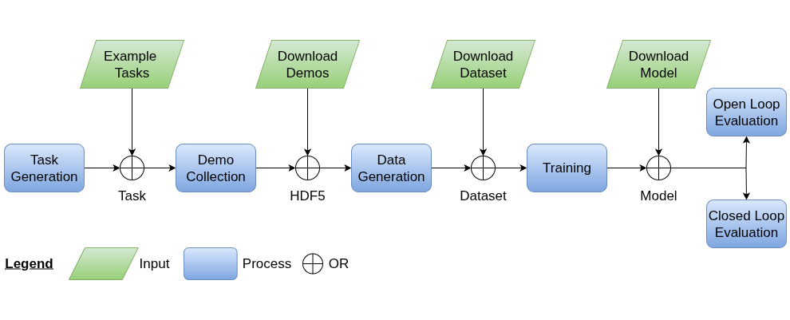

Example Workflows#
This page provides an overview of the complete mindmap workflow and the available shortcuts to get you started quickly.
Workflow Overview#

mindmap Workflow Diagram#
Complete Workflow#
To train and evaluate a mindmap model on your own custom task, follow these steps:
Create a mindmap task - Define your custom robotic task
Record demonstrations - Collect expert demonstrations for imitation learning
Generate a mindmap dataset - Process demonstrations into mindmap format
Train a mindmap model - Train the spatial memory model
Evaluate open loop - Test model predictions on recorded data
Evaluate closed loop - Test model performance in Isaac Lab simulation
Quick Start Options#
We provide several shortcuts to help you get started immediately:
Predefined Tasks:
Four benchmark tasks (Cube Stacking, Mug in Drawer, Drill in Box, Stick in Bin) with complete data and models ready to use.
Downloadable Resources:
HDF5 demonstration files for all tasks
Pre-generated datasets in mindmap format
Trained model checkpoints ready for evaluation
These resources allow you to:
Skip directly to any workflow step
Use them as references when creating your own tasks
Quickly test mindmap capabilities without going through the complete workflow
Getting Started#
See the Workflow Diagram above for a visual overview of the complete workflow and available shortcuts.
For detailed information about:
Predefined tasks: mindmap Tasks
Pre-generated datasets including HDF5 demonstration files: Download Datasets
Trained model checkpoints: Download Checkpoints